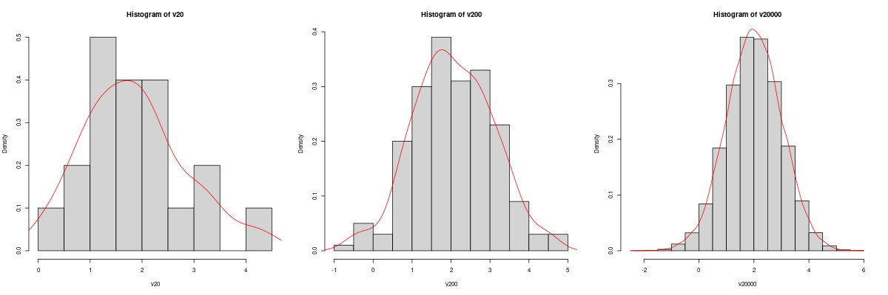

Week 2 HW:
Please play with the syntaxes provided and any other R syntaxes you would like to try out. Getting farmiliar with those syntaxes is important for doing your projects in this course. Use help() function or look up the function in CRAN manual, if you are not clear how the function works.
For your Week 2 HW grading, please submit some evidence of your syntax practice. You can upload screenshots of your R outputs onto Canvas. If you have any questions, please post your questions on Wk2 discussion board on Canvas.
Vectors
In R, vectors are the most commonly used objects to store data for statistical modeling and analysis. For example, in a data frame (which we will talk about next week), each column vector usually represents values of a variable cross individual samples, while each row vector represents values for all variables for that sample.
- Entries of a vector can be integers, decimals, characteristics, logical, strings, etc.
A <- 1:20
B <- c(1.46, -0.003, 1.2e-4)
C <- c("Italy", "Egypt", "Mexico")
D <- (A>10)
E <- rep("STAT818", 5)
A
[1] 1 2 3 4 5 6 7 8 9 10 11 12 13 14 15 16 17 18 19 20
B
[1] 1.46000 -0.00300 0.00012
C
[1] "Italy" "Egypt" "Mexico"
D
[1] FALSE FALSE FALSE FALSE FALSE FALSE FALSE FALSE FALSE FALSE TRUE TRUE
[13] TRUE TRUE TRUE TRUE TRUE TRUE TRUE TRUE
E
[1] "STAT818" "STAT818" "STAT818" "STAT818" "STAT818"
- Some basic operation on vectors.
### Name a vector
gdp <- c(2.7, 14.7, 3.8, 5.1, 20.9)
names(gdp) <- c("India", "China", "Germany", "Japan", "United States")
gdp
India China Germany Japan United States
2.7 14.7 3.8 5.1 20.9
### Subvector
A1 <- A[A>10]
A1
[1] 11 12 13 14 15 16 17 18 19 20
gdp[which(names(gdp)!="United States")]
India China Germany Japan
2.7 14.7 3.8 5.1
### Ranks of a numeric vector
rank(gdp)
India China Germany Japan United States
1 4 2 3 5
### order of a numeric vector
order(gdp)
[1] 1 3 4 2 5 # Make sure you understand the difference between 'rank'
# and 'order' outputs!
gdp[order(gdp)]
India Germany Japan China United States
2.7 3.8 5.1 14.7 20.9
gdp[order(gdp, decreasing = TRUE)]
United States China Japan Germany India
20.9 14.7 5.1 3.8 2.7
### Combine vectors
c(B, C)
[1] "1.46" "-0.003" "0.00012" "Italy" "Egypt" "Mexico"
#Notice the combined vector becomes a vector of characters.
paste(rep("STAT818-Wk", 5), 1:5, sep="")
[1] "STAT818-Wk1" "STAT818-Wk2" "STAT818-Wk3" "STAT818-Wk4" "STAT818-Wk5"
### Set operation on two vectors
S1 <- c("A", "B", "C", "D", "E")
S2 <- c("C", "E", "F","G")
c(S1, S2)
[1] "A" "B" "C" "D" "E" "C" "E" "F" "G"
union(S1, S2)
[1] "A" "B" "C" "D" "E" "F" "G" # Pay attention to the difference!
intersect(S1, S2)
[1] "C" "E"
setdiff(S1, S2)
[1] "A" "B" "D"
match(S1, S2)
[1] NA NA 1 NA 2
S1[which(!is.na(match(S1, S2)))]
[1] "C" "E" # Same as intersect(S1, S2), think why is that?
S1[which(is.na(match(S1, S2)))]
[1] "A" "B" "D" # Same as setdiff(S1, S2).
- A vector can contain missing values.
x <- c(4, 7, NA, 9, NA, 32)
### Find out if each entry of x is a missing value or not
is.na(x)
[1] FALSE FALSE TRUE FALSE TRUE FALSE
### Find out which entries contain missing values
which(is.na(x))
[1] 3 5
### Find out which entries are not missing
which(!is.na(x))
[1] 1 2 4 6
### Find out if a vector contains missing value(s)
length(which(is.na(A)))
[1] 0 # A contains zero 'NA', there is no missing value in vector A
length(which(is.na(x)))
[1] 2 # x contains two missing values.
- Now let’s try something more challenging: impute the missing values in x with the average of its non-missing values.
x[which(is.na(x))] <- mean(x[which(!is.na(x))])
x
[1] 4 7 13 9 13 32 # Notice 13 is the averge of 4, 7, 9, 32.
- Vector arithmetics.
a <- c(1,2,3,4,5)
b <- c(6,7,8,9,10)
mean(a)
[1] 3
sd(a) # Standard devistion of a
[1] 1.581139
summary(a)
Min. 1st Qu. Median Mean 3rd Qu. Max.
1 2 3 3 4 5
a+b
[1] 7 9 11 13 15
a*b # Entry-wise product
[1] 6 14 24 36 50
a%*%b # Dot product of two vectors[*]
[,1]
[1,] 130
[*] Dot product of two K-length vectors is defined to be $$ a . b =\sum_{k=1}^K a_k b_k,$$ where $$a=(a_1, \cdots, a_K)’ \mbox{ and } b=(b_1, \cdots, b_K)’.$$
- Random vectors
v20 <- rnorm(20, mean=2, sd=1)
mean(v20)
[1] 1.854119
sd(v20)
[1] 0.9924311
v200 <- rnorm(200, mean=2, sd=1)
mean(v200)
[1] 2.061247
sd(v200)
[1] 1.01953
v20000 <- rnorm(20000, mean=2, sd=1)
mean(v20000)
[1] 2.001766
sd(v20000)
[1] 0.9996004
Have you been convinced of the Law of Large Numbers?
- Vector of plots. Now let’s plot out the histograms of these random vectors in a
vector of plots! Please remember those vectors are generated from a normal distribution withmean=2andstandard deviation=1.
par(mfrow = c(1, 3)) # Create a 1 x 3 plotting vector
# The three histograms created will be plotted next to each other
# Histogram 1
hist(v20, prob=TRUE)
lines(density(v20), col = "red") # Overlay density curve
# Histogram 2
hist(v200, prob=TRUE)
lines(density(v200), col = "red")
# Histogram 3
hist(v20000, prob=TRUE)
lines(density(v20000), col = "red")

Have you been convinced of the Central Limit Theorem?
Matrices
I guess you are already familiar with the concept of a matirx. However, there are two things I want to point out here:
-
Matrices is a special case of Arrays (which we will talk about next). You can think of a matrix as 2D projection of some 3D array.
-
A matrix is different to a
dataframe(which we will talk about next week), even though they sometimes look like each other.
- Define and assign values to a matrix.
X <- matrix(c(1, 0, 0, 0, 1, 0, 0, 0, 1), nrow = 3)
X
[,1] [,2] [,3]
[1,] 1 0 0
[2,] 0 1 0
[3,] 0 0 1
X1 <- diag(3) # X1 same as X
X1
[,1] [,2] [,3]
[1,] 1 0 0
[2,] 0 1 0
[3,] 0 0 1
X <- matrix(c(1:12), nrow=3)
X
[,1] [,2] [,3] [,4]
[1,] 1 4 7 10
[2,] 2 5 8 11
[3,] 3 6 9 12
# By default, matrix() stack a vector into a matrix columewise.
X1 <- matrix(c(1:12), nrow=3, byrow=TRUE)
X1
[,1] [,2] [,3] [,4]
[1,] 1 2 3 4
[2,] 5 6 7 8
[3,] 9 10 11 12
# Option "byrow=TRUE" makes the stacking rowwise.
- Naming the rows and columns of matrices.
### We generating a matrix mimicing expression levels for 4 genes and 5 cells
expMat <- matrix(c(0,1,0,3,0,0,0,0,2,0,1,0,0,0,1,5,0,4,5,0), nrow=5)
expMat
[,1] [,2] [,3] [,4]
[1,] 0 0 1 5
[2,] 1 0 0 0
[3,] 0 0 0 4
[4,] 3 2 0 5
[5,] 0 0 1 0
rownames(expMat) <- c("Cencer cell", "T Cell", "B Cell", "stem cell", "muscle cell")
colnames(expMat) <- c("TNF", "EGFR", "IL4", "APOE")
expMat
TNF EGFR IL4 APOE
Cencer cell 0 0 1 5
T Cell 1 0 0 0
B Cell 0 0 0 4
stem cell 3 2 0 5
muscle cell 0 0 1 0
- Submatrix, matrix transpose, determinant of a squared matrix.
X1
[,1] [,2] [,3] [,4]
[1,] 1 2 3 4
[2,] 5 6 7 8
[3,] 9 10 11 12
X1[2:3, 2:4]
[,1] [,2] [,3]
[1,] 6 7 8
[2,] 10 11 12
t(X1)
[,1] [,2] [,3]
[1,] 1 5 9
[2,] 2 6 10
[3,] 3 7 11
[4,] 4 8 12
X <- matrix(rnorm(16), 4, 4)
X
[,1] [,2] [,3] [,4]
[1,] 0.370402920 -0.1075556 -0.5772708 0.2157153
[2,] 0.996578870 -1.2057802 -0.6337978 1.1679033
[3,] 1.419479131 0.8905424 -0.5620364 0.6918340
[4,] 0.008353184 -0.6162812 -0.1980119 -0.5709147
det(X)
[1] 0.782603
- Identify missing values in a matrix.
X <- matrix(c(3.1, NA, 2.5, -1.8, NA, 0.77, -3.0, NA), nrow=4)
X
[,1] [,2]
[1,] 3.1 NA
[2,] NA 0.77
[3,] 2.5 -3.00
[4,] -1.8 NA
which(is.na(X), arr.ind=TRUE) # return positions of three 'NA's
row col
[1,] 2 1
[2,] 1 2
[3,] 4 2
- Calculations on rows or columns of matrices.
X <- matrix(c(1:12), nrow=3)
X
[,1] [,2] [,3] [,4]
[1,] 1 4 7 10
[2,] 2 5 8 11
[3,] 3 6 9 12
apply(X, 1, max) # The second argument = 1 lets the apply function act on each row of X matrix
[1] 10 11 12
apply(X, 2, max) # The second argument = 2 lets the apply function act on each column of X matrix
[1] 3 6 9 12
- Last, let’s revisit the multi-dimentional Central Limit Theorem by generating bivariate normal data matrices and visualising the empirical distribution using heapmaps.
library(MASS)
mu <- c(0,0) # Mean
Sigma <- matrix(c(1, .5, .5, 1), 2) # Covariance matrix
Sigma
[,1] [,2]
[1,] 1.0 0.5
[2,] 0.5 1.0
# Generate sample from N(mu, Sigma)
DM50 <- mvrnorm(50, mu = mu, Sigma = Sigma )
head(DM50)
[,1] [,2]
[1,] -1.3746719 -0.6332140
[2,] -0.9617408 -0.1572164
[3,] 0.1257806 0.1259811
[4,] 0.6327408 1.0349557
[5,] 0.9153924 0.3191274
[6,] -0.4941903 -0.2205147
dim(DM50)
[1] 50 2png('Wk2_heatmap.png', height=400, width=1200)
par(mfrow = c(1, 3)) # Create a 1 x 3 plotting vector
# The three heatmaps created will be plotted next to each other
# Calculate kernel density estimate
DM50.kde <- kde2d(DM50[,1], DM50[,2], n = 50) # from MASS package
image(DM50.kde) # from base graphics package
contour(DM50.kde, add = TRUE) # from base graphics package
DM5000.kde <- kde2d(DM5000[,1], DM5000[,2], n = 50)
image(DM5000.kde)
contour(DM5000.kde, add = TRUE)
DM500000.kde <- kde2d(DM500000[,1], DM500000[,2], n = 50)
image(DM500000.kde)
contour(DM500000.kde, add = TRUE)
dev.off()
DM5000 <- mvrnorm(5000, mu = mu, Sigma = Sigma )
dim(DM5000)
[1] 5000 2
DM500000 <- mvrnorm(500000, mu = mu, Sigma = Sigma )
dim(DM500000)
[1] 500000 2
# Contour plot overlayed on heatmaps for visulizing their distribution
par(mfrow = c(1, 3)) # Create a 1 x 3 plotting vector
# The three heatmaps created will be plotted next to each other
# Calculate kernel density estimate
DM50.kde <- kde2d(DM50[,1], DM50[,2], n = 50) # from MASS package
image(DM50.kde) # from base graphics package
contour(DM50.kde, add = TRUE) # from base graphics package
title(main = "n=50", font.main = 4) # add title
DM5000.kde <- kde2d(DM5000[,1], DM5000[,2], n = 50)
image(DM5000.kde)
contour(DM5000.kde, add = TRUE)
title(main = "n=5000", font.main = 4)
DM500000.kde <- kde2d(DM500000[,1], DM500000[,2], n = 50)
image(DM500000.kde)
contour(DM500000.kde, add = TRUE)
title(main = "n=500000", font.main = 4)

Further convinced about the Central Limit Theorem?
Arrays
An array is a multi-dimensional object where all the entries have the same class (e.g. they are all numeric).
Arr <- array(c(1:24), dim=c(4,3,2))
Arr
, , 1
[,1] [,2] [,3]
[1,] 1 5 9
[2,] 2 6 10
[3,] 3 7 11
[4,] 4 8 12
, , 2
[,1] [,2] [,3]
[1,] 13 17 21
[2,] 14 18 22
[3,] 15 19 23
[4,] 16 20 24
Each entry of an 3D array is a matrix.
- 2D projection matrix of a 3D array.
Arr[,,1]
[,1] [,2] [,3]
[1,] 1 5 9
[2,] 2 6 10
[3,] 3 7 11
[4,] 4 8 12
Arr[,2,]
[,1] [,2]
[1,] 5 17
[2,] 6 18
[3,] 7 19
[4,] 8 20
Arr[3,,]
[,1] [,2]
[1,] 3 15
[2,] 7 19
[3,] 11 23
- Apply function to a 3D array.
apply(Arr, 1, max)
[1] 21 22 23 24
apply(Arr, 2, max)
[1] 16 20 24
apply(Arr, 3, max)
[1] 12 24
Might need some thinking to clear this out…